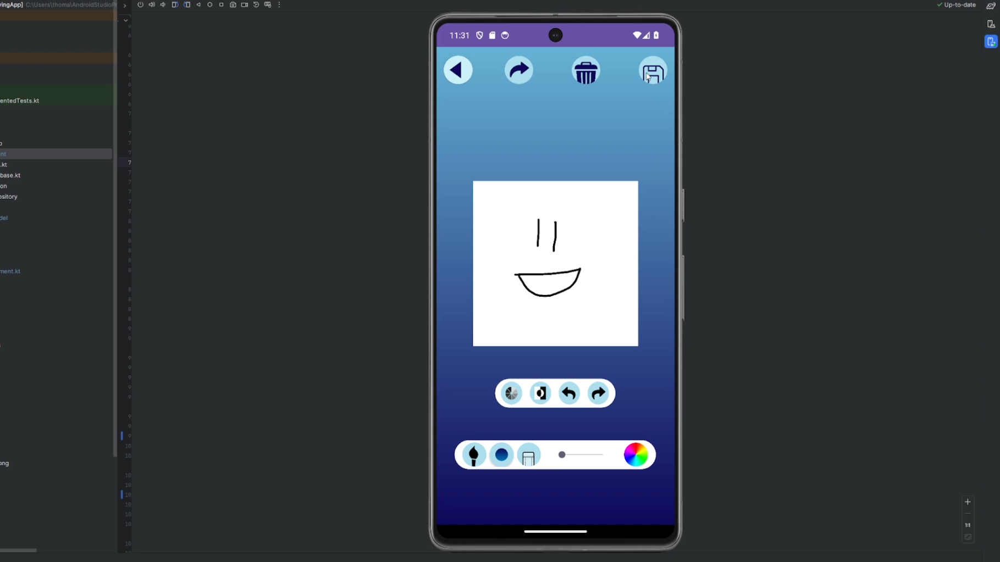
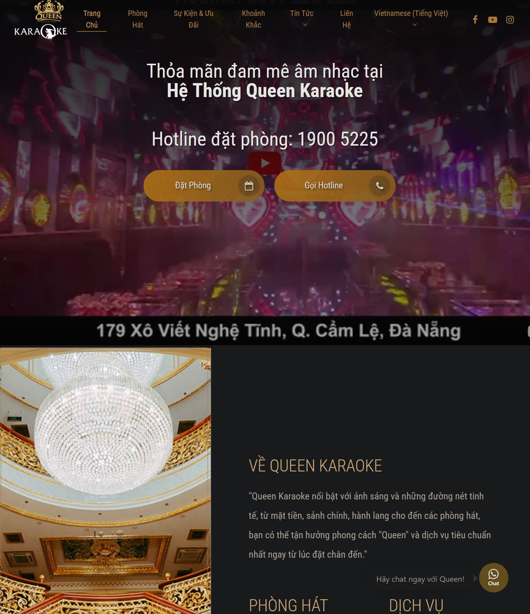
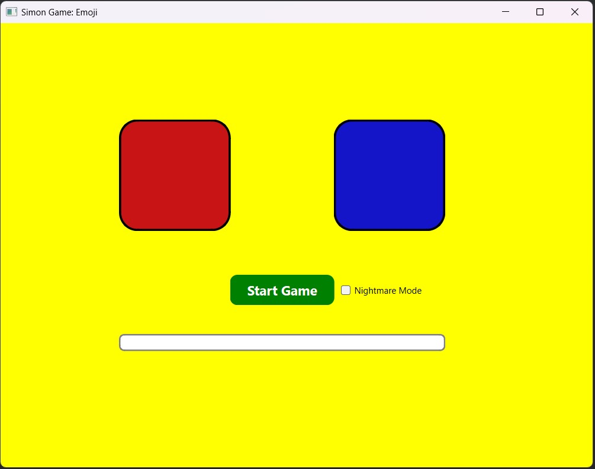
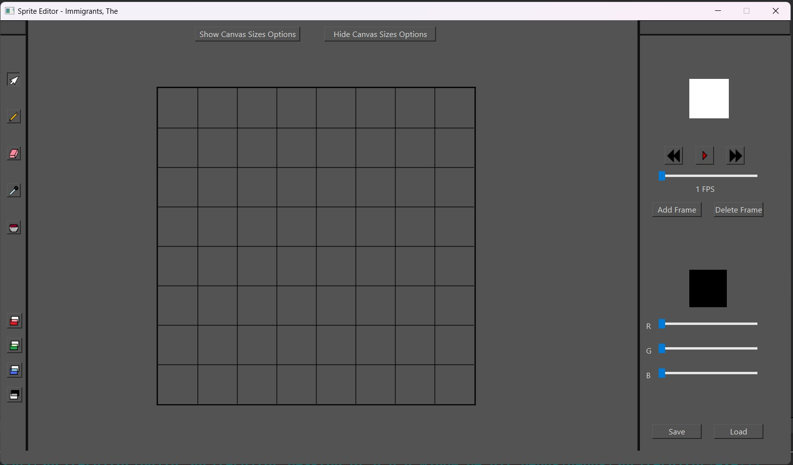
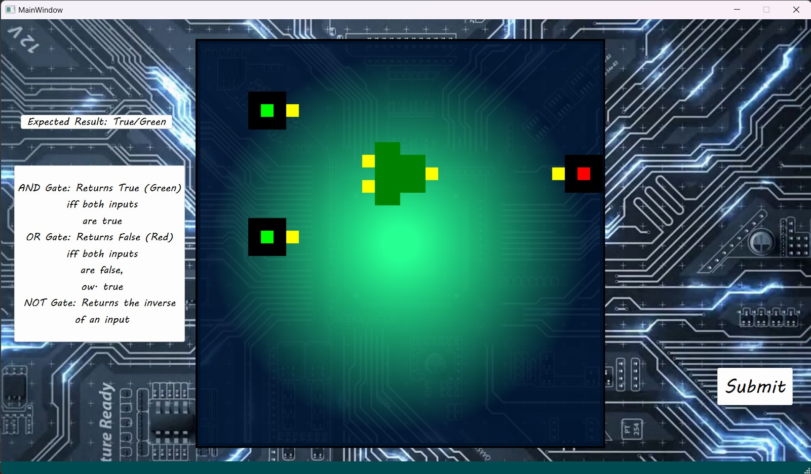

About Me
Hello! I'm Nam Nguyen, a dedicated and passionate Computer Science student at the University of Utah,
where I've honed my skills in programming languages like Java, C++, C#, and more. My journey in
technology began at Emerson College, where I studied Media Production, fueling my creative side and
leading me to produce several short films since my high school days.
My curiosity and drive have led me to the world of game development. I've crafted a variety of games and programs,
such as an educational puzzle game and sprite editor designed using C++ and Qt Framework. This hands-on experience has not only
sharpened my programming skills but also allowed me to dive into the creative process of generating
assets and animations using tools like Photoshop, Maya, and Unreal Engine.
My journey isn't just about coding and creating; it's also about connecting and collaborating. I
pride myself on my strong communication skills and my ability to work effectively in team
environments. I've consistently delivered quality results and believe in the power of teamwork and
shared vision.
As I continue on this exciting path in computer science, I am eager to learn, grow, and contribute to
innovative projects. Whether it's developing engaging games or exploring new technologies, I am
committed to bringing my blend of technical skills and creative insights to make a meaningful
impact.
Projects
Apartment X
Apartment X is a liminal-space game inspired by Exit 8, made using Unreal Engine 5. As an engineer, I was involved in enhancing the first-person camera, designing various anomaly and level mechanics and AI behavior.
View on itch.io
Android Drawing App

Worked in a team of three to create a responsive drawing app for Android using Kotlin and Android Studio. Led the integration of Google Firebase for real-time synchronization, ensuring seamless backups and restores across devices. Managed user accounts with Firebase Authentication and implemented secure authorization rules in Firestore to share drawings while maintaining data privacy.
Queen Karaoke Website

Designed and managed the Queen Karaoke website using WordPress, optimizing user experience and ensuring mobile responsiveness, prodiving multilingual support which lead to a 20% increase in online reservation and 50% in site traffic.
View Website
Simon Game

The Simon game is a Qt and C++ based memory skill game, inspired by the classic electronic game of the same name. It challenges players to remember and replicate sequences of lights and sounds, showcasing a blend of programming logic and user interface design. This project demonstrates proficiency in both C++ programming and Qt framework.
View on GitHub
Sprite Editor

The Sprite Editor, developed for the University of Utah's CS3505 class, is a sophisticated tool designed in C++ using the Qt framework. This application enables users to create and edit sprite sheets, essential for 2D game development and animation. It features intuitive controls for pixel-level editing, color adjustments, and animation frame management, demonstrating adeptness in GUI development and graphic manipulation.
View on GitHub
Educational Circuit Game

This is an educational circuit game, developed for the University of Utah's CS3505 class, crafted using C++ and the Qt framework, offers an interactive learning experience about logic gates such as AND, OR, and NOT. Featuring draggable circuit cables akin to those in Circuitverse, it provides an engaging way for players to explore and understand the principles of electronic circuits through hands-on puzzle-solving.
View on GitHub